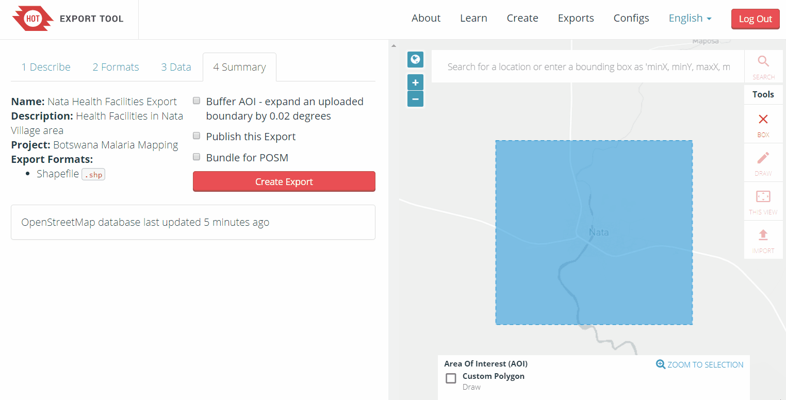

6.1 Outil d'exportation de HOT
Objectifs du cours
Cette section explique comment utiliser l’outil d’exportation de HOT pour t√©l√©charger les donn√©es OSM dans la r√©gion de votre choix. √Ä la fin de cette section, vous serez en mesure de :
- Comprendre la vue d’ensemble de l’outil d’exportation de HOT
- Comprendre comment exporter des donn√©es OSM √† l’aide de l’outil d’exportation HOT
Activités d’apprentissage
L d‚ÄôExportation de HOT est un service ouvert qui permet de cr√©er des extraits personnalis√©s de donn√©es OSM actualis√©es dans diff√©rents formats de fichiers, tels que ESRI shapefiles (.shapefile), google KML (.kml), GeoPackage (.gpkg) et MBTiles (.mbtiles). On peut s√©lectionner la zone et les cat√©gories sp√©cifiques dont on a besoin. T√©l√©charger et utiliser les donn√©es en citant simplement les contributeurs ¬© OpenStreetMap. Tout le monde peut cr√©er une exportation OpenStreetMap personnalis√©e avec l’outil d’exportation - il suffit d’ouvrir un compte. Vous pouvez vous enregistrer avec un compte OpenStreetMap √† partir de OpenStreetMap.org et une adresse √©lectronique valide. Des ressources d’apprentissage et des explications sont disponibles √† l’adresse suivante Page de l‚Äôapprentissage de l‚Äôoutil d‚Äôexportation de HOT.
Utilisation de l’outil d’exportation de HOT
Outils et technologies nécessaires:
- Ordinateur
- Connexion internet
- Compte OSM
Pour commencer, ouvrez un navigateur Internet et rendez-vous sur le site suivant: https://export.hotosm.org/ Pour utiliser l’outil d’exportation HOT, vous devez vous connecter √† l’aide de votre nom d’utilisateur et de votre mot de passe OSM, en cliquant sur le bouton rouge “Connexion” dans le coin sup√©rieur droit.

S√©lectionnez “Cr√©er” dans le menu sup√©rieur .

S√©lectionnez une zone d’int√©r√™t sur la carte en recherchant un lieu, en t√©l√©chargeant un fichier .geojson ou en dessinant une zone sur la carte √† droite. Pour dessiner une zone d’int√©r√™t, faites un zoom avant et trouvez le lieu de votre choix (par exemple, Zwedru, Accra). Une fois que vous avez fait un zoom avant sur la zone qui vous int√©resse, s√©lectionnez l’outil bo√Æte dans le menu Outils √† droite. Cliquez sur un coin pour commencer √† dessiner une bo√Æte, puis s√©lectionnez le coin oppos√© pour compl√©ter la bo√Æte. C’est votre ZONE D’INT√âR√äT qui sera t√©l√©charg√©e.

Dans la partie gauche de la fen√™tre, remplissez les options “1 D√©crire‚Äù :
- Nom : ‚Äú [VOTRE NOM D’UTILISATEUR OSM] Test Export”
- Par exemple, “jessbeutler Test Export”
- Description (optionnel)
- Project (optionnel)
- Par exemple, “Projet d’inclusion gouvernementale‚Äù

S√©lectionnez le type de fichier souhait√© dans l’onglet “Formats”. Si vous t√©l√©chargez des donn√©es √† utiliser dans un programme SIG, essayez de t√©l√©charger un fichier .shp.

Dans l’onglet “Donn√©es”, s√©lectionnez les types de donn√©es OSM √† exporter. Nous vous recommandons d’essayer les types suivants : ‘Education’, ‘Gouvernement’, ‘Sant√©’.

Dans l’onglet “R√©sum√©”, s√©lectionnez “Cr√©er une exportation”. Pendant le traitement, l’√©tat “En cours” s’affiche. Le temps de traitement d√©pend de la taille de l’exportation. Une fois termin√©, le fichier pourra √™tre t√©l√©charg√© et envoy√© √† votre adresse √©lectronique. Pendant le traitement, l’√©tat “En cours” s’affiche. Le temps de traitement d√©pend de la taille de l’exportation. Une fois termin√©, le fichier pourra √™tre t√©l√©charg√© et envoy√© √† votre adresse √©lectronique.

| üí° Le saviez vous? üí° |
|---|
| Ce processus prendra plusieurs minutes en fonction de la taille de la zone t√©l√©charg√©e, du type de donn√©es OSM que vous exportez et de la densit√© des donn√©es OSM. Les r√©gions de la taille d’une ville devraient prendre quelques minutes - les r√©gions plus grandes peuvent prendre jusqu’√† 20 minutes |
Lorsque le processus d’exportation est termin√©, la barre d’√©tat est mise √† jour avec la mention “TERMIN√â”. T√©l√©chargez le fichier en cliquant sur le lien du fichier, comme indiqu√© ci-dessous. Pour les fichiers de forme, ouvrez le dossier .zip t√©l√©charg√© et enregistrez-le dans le dossier de votre choix sur votre ordinateur. Vous pouvez maintenant utiliser le fichier de forme dans un logiciel SIG tel que QGIS.
[Quiz] Testez vos connaissances
-
Vous trouverez ci-dessous les types de fichiers que vous pouvez t√©l√©charger √† l’aide de l’outil d’exportation HOT, √† l’exception des fichiers suivants :
a. Shapefile (.shp)
b. Geopackage (.gpkg)
c. Google KML (.kml)
d. MBTiles (.mbtiles)
e. Image (.jpg .png or .JPEG)
Answer: 1.E
Liste de contrôle des activités
À la fin de cette section, vous devriez être en mesure de :
- Comprendre ce qu’est l’outil d’exportation HOT
- Utiliser l’outil d’exportation HOT pour télécharger des données OSM
Ressources complémentaires
Présentation de la formation